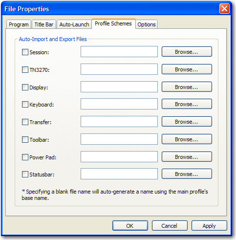

- Click from the BlueZone menu bar.
- Click the Profile Schemes tab.
Figure 1. Profile Schemes window

Note: This is an example of the BlueZone Mainframe Display Profile
Schemes window. Other BlueZone emulation client Profile Schemes windows
look slightly different; however, the functionality and concepts are
the same.
- Determine which aspects of the BlueZone configuration you
want to override using the profile schemes feature.
- Select the check box(es) of the desired features to override.
There are two ways to use this window:
- You can leave the file names blank, in which case BlueZone
creates a profile configuration file (based on your current configuration
settings) with the same name as the master BlueZone configuration
file, but with the corresponding file extension.
- You can create you own dialog configuration profiles by going
to each dialog, making your desired customizations, then exporting
the changes to a dialog configuration profile using your own naming
convention.
- Depending on which method you want to use, either leave
the file name blank or use Browse to locate
the appropriate dialog configuration profile.
- Click OK.
When this BlueZone Mainframe Display session launches, BlueZone
applies all of the configuration settings stored in the main BlueZone
configuration file (.zmd) first, then it applies
the dialog configuration profiles that are selected in the Profile
Schemes window and overrides the configuration settings with the values
stored in the selected dialog configuration profiles.
Refer to
Dialog level configuration profiles for a complete
listing of the dialog configuration profile file extensions.